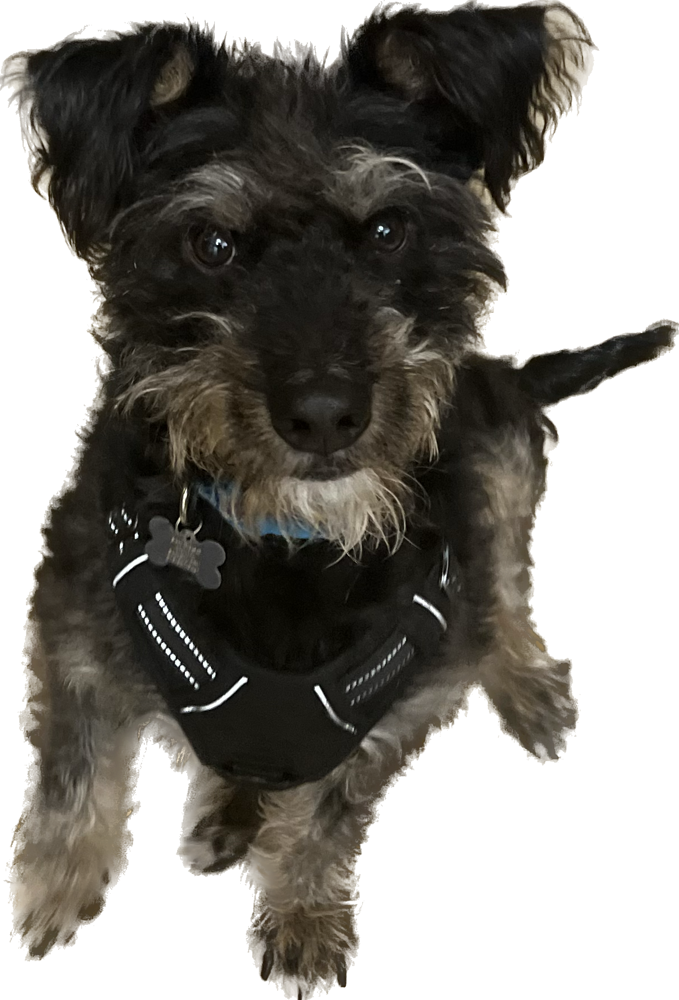

He once tore off and chewed blinds because he was mad his mom went to work
His favorite snack is the Puppy Patty from In n Out
He hates bananas
His favorite store is Target
Comet

Has an alter-ego named “Stinko”. His parents developed a voice for him and everything.
World champion title holder for biggest, and longest whiner (he can go for HOURS!). His whines can put anyone in either a feral rage, fall to their knees or both.
Remembers only good things, never the bad until it is too late.
Is an Eagle Scout, as he is professional scavenger of food and scraps found on the streets during his walks
Rhubarb and Cecil
Siblings, mama cat was found by a dumpster in Surrey, B.C., they're both Canadian
Rhubarb Alien Snifflepants Angelfluff:
the runt of her litter
will only eat from an elevated location, like a table, chair, or couch
Likes to be held like a baby for 10+ minutes (or until your arms give out)
favorite activity is flopping around like an otter
Cecil Percival Taylor:
lives up to his namesake with his free jazz zoomies
won't eat any food except for the same one he's always had and greenie's treats
will eat stray threads, string, and cardboard
doesn't know how to unstick his claws from things like couches and window screens